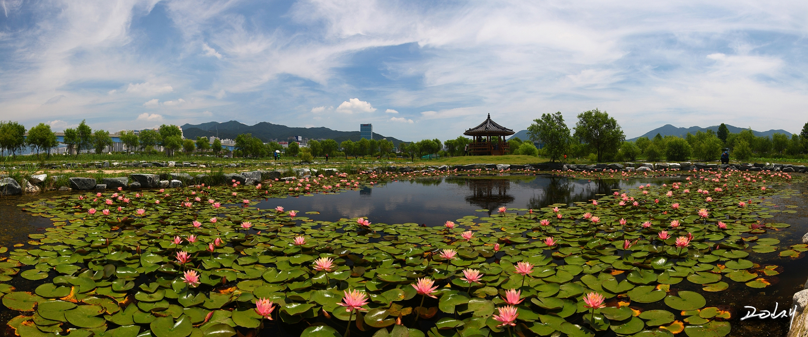

Go the the home!
Travel the Busan!
Introduce the Samrak Park

The vast riverside park stretches to the left and right sides of the Nakdonggang Estuary under the Nakdong Bridge, which enters Samnak-dong, Sasang-gu, Busan, and covers an area of 4,722,000 square meters. It is a sports and food space decorated with grass square, wild flower complex and natural learning field, four-season flower garden, natural grassland and wetland, inline skating, bicycle and walking course, cultural yard, and various other events such as concerts, sports competitions, and festivals are also held.
Select the place where you want to see in Busan
- Haeundae
- Gwanganri
- International market
- Gamcheon Culture Village
- Samrak Park